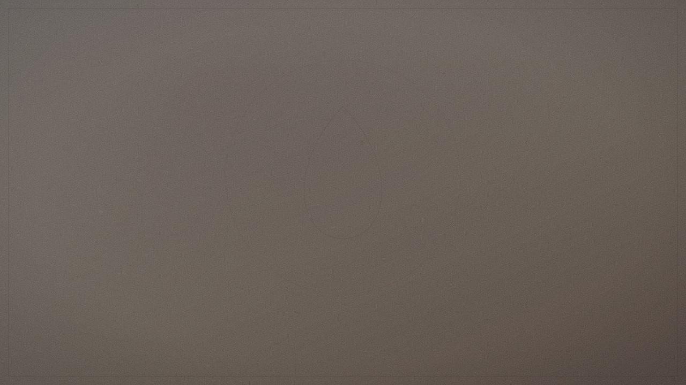

Comprendre
Une information pédagogique, sourcée et relue, sur l’endométriose.
Un espace consacré à la compréhension, aux programmes de recherche et aux développements de Maison Mirenza liés aux besoins des personnes concernées.

Cette page distingue information, recherche, prototype et bénéfice validé. Aucun effet thérapeutique n’est suggéré sans niveau de preuve et statut adaptés.
Une information pédagogique, sourcée et relue, sur l’endométriose.
Les programmes, axes et collaborations rendus publics, avec leur statut.
Des solutions en développement, présentées uniquement lorsqu’elles peuvent l’être.
L’endométriose est une maladie gynécologique chronique fréquente. Elle peut retentir sur le quotidien, le travail, le sommeil et la qualité de vie.
Les parcours et les besoins varient beaucoup d’une personne à l’autre. C’est pourquoi nous partons de l’écoute des usages réels avant de concevoir quoi que ce soit.
Contenu informatif. Il ne remplace pas un avis médical. En cas de symptômes, parlez-en à un professionnel de santé.
À utiliser comme structure de recherche, jamais comme promesse clinique.
Les partenaires, calendriers et résultats apparaissent seulement lorsque leur publication est autorisée.
Axe de recherche et de développement consacré aux besoins liés à l’endométriose et à la participation de Maison Mirenza à des programmes de recherche.
Un appel à participation n’est ouvert que lorsqu’un protocole réel existe. En attendant, vous pouvez suivre l’avancée de nos travaux.